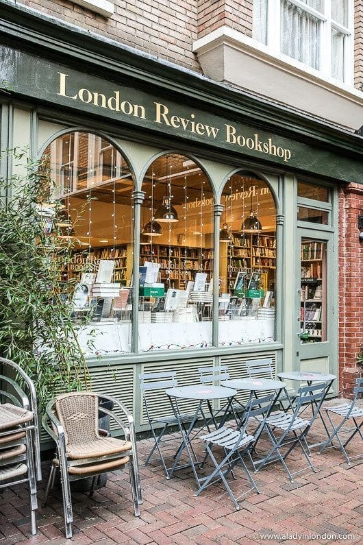

Sobre nós

BOOKSTAN
à Bookstan, uma livraria encantadora que nasceu da paixão por histórias e conhecimento. Localizada no coração da cidade, seu exterior exibe uma fachada rica em detalhes clássicos, com janelas amplas que convidam os visitantes a entrarem. Ao cruzar o limiar, você é saudado pelo aroma reconfortante de páginas de livros antigos e novos.O interior da Bookstan é um verdadeiro refúgio para os amantes da literatura. As prateleiras de madeira escura se estendem até o teto, abrigando uma coleção abrangente de gêneros literários, desde clássicos atemporais até as últimas novidades. Lustres elegantes espalham uma luz suave sobre os corredores, proporcionando um ambiente acolhedor e tranquilo.